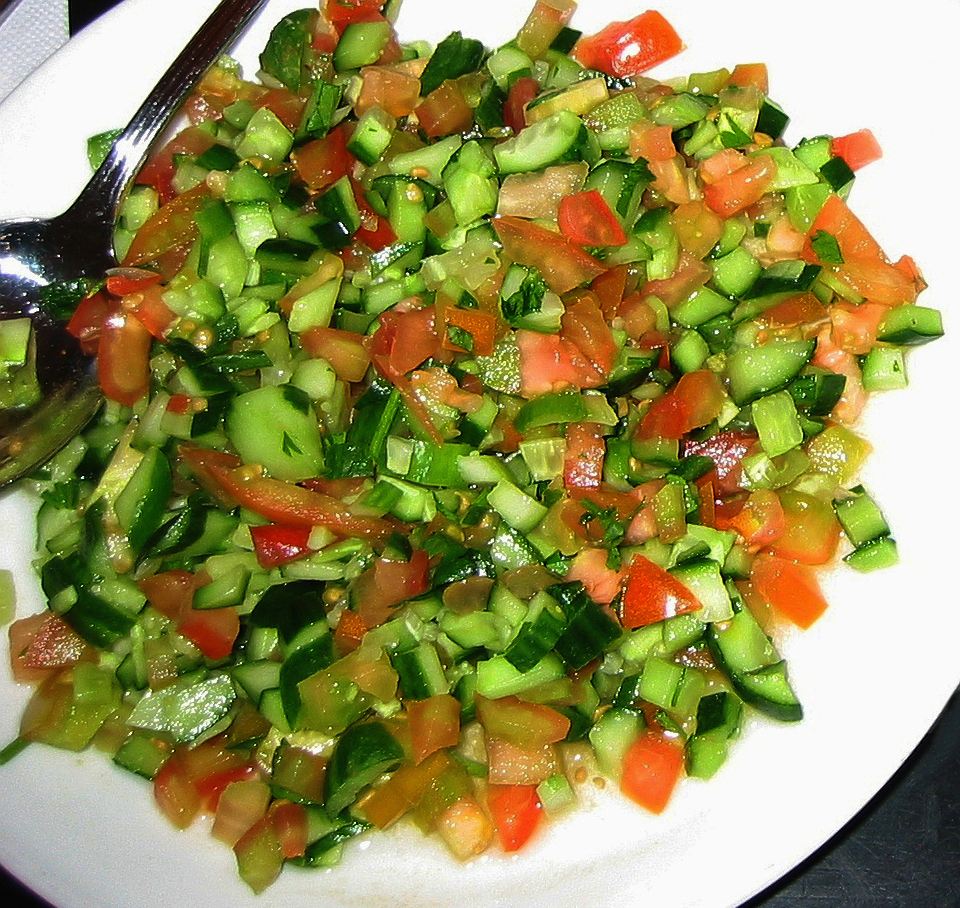

Home
Salad

Description
This refreshing Greek salad is a classic Mediterranean dish that combines crisp vegetables with tangy feta cheese
and olives. It's light, healthy, and packed with flavor.
Perfect as a side dish or a light main course, this salad comes together in just minutes and requires no cooking
at all. The simple olive oil and lemon dressing lets the fresh ingredients shine.
Ingredients
- 4 large ripe tomatoes, cut into wedges
- 1 cucumber, sliced
- 1 red onion, thinly sliced
- 1 green bell pepper, cut into rings
- 200g feta cheese, cubed
- 1 cup Kalamata olives
- 1/4 cup extra virgin olive oil
- 2 tablespoons lemon juice
- 1 teaspoon dried oregano
- Salt and pepper to taste
Steps
- Wash all the vegetables thoroughly under cold water.
- Cut the tomatoes into wedges and place them in a large salad bowl.
- Slice the cucumber and add it to the bowl.
- Thinly slice the red onion and separate into rings. Add to the bowl.
- Cut the green bell pepper into rings and add to the vegetables.
- Add the Kalamata olives to the bowl.
- Cube the feta cheese and gently place on top of the salad.
- In a small bowl, whisk together olive oil, lemon juice, and dried oregano.
- Drizzle the dressing over the salad.
- Season with salt and pepper to taste.
- Toss gently to combine, being careful not to break up the feta too much.
- Serve immediately and enjoy!
Home